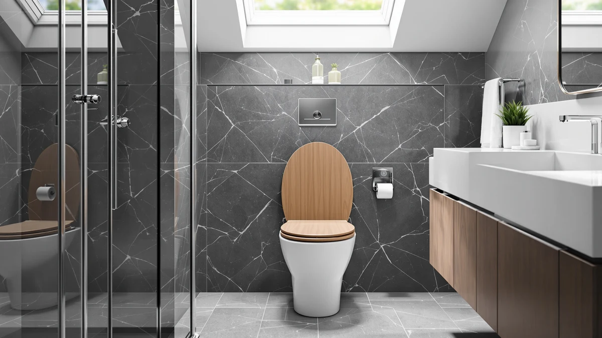

Bath Décor 5Q1E2-17AB Solid Oak Traditional Design Toilet Seat Review (2026): Worth It?


Quick Answer
In this bath décor 5q1e2-17ab solid oak traditional design toilet seat review, we compared its solid oak build and brass-tone hinges against competing wood, potty-training and heated seats on construction and price. At $76.88, the 5Q1E2-17AB earns its spot for anyone who wants a traditional, furniture-grade seat instead of a molded plastic one, though it will not suit a buyer who wants a heated seat or a built-in child seat.
Our pick: Bath Décor 5Q1E2-17AB Solid Oak — $76.88 Check Price on Amazon
Things to Know Before You Buy
- The Bath Décor 5Q1E2-17AB is built from solid oak, not the molded wood-look plastic common on budget seats.
- Solid metal alloy hinges replace the plastic hinges that tend to wear out fastest on cheaper seats.
- It ships in an elongated shape only, so measure your bowl before buying.
- At $76.88, it costs more than a standard plastic seat but about the same as the other solid-oak finish in this guide.
- Amazon does not list a star rating or review count for this exact finish, so judge it on construction and price rather than a crowd score.
This bath décor 5q1e2-17ab solid oak traditional design toilet seat review exists because most toilet seat buying guides skip the one spec that actually decides how long a seat lasts: what it is built from. Browse any marketplace page for twenty seconds and you will find a wall of near-identical plastic seats dressed up with wood-grain stickers and marketing copy borrowed straight from the manufacturer's bullet points. A seat actually built from solid oak, with real metal hinges instead of molded plastic ones, tends to get lost in that noise simply because it looks similar in a thumbnail. We pulled the Bath Décor 5Q1E2-17AB's spec sheet, its current Amazon price, and the closest competing seats covered on besttoiletseats.com to see where it actually stands against that noise.
The short version: the 5Q1E2-17AB is a traditional oak seat built with solid metal alloy hinges and a finger-jointed, glued construction, priced at $76.88 in the elongated size. That construction puts it a tier above the molded plastic seats that dominate the sub-$50 range, and it matches the build quality of the other solid-oak Bath Décor finish we compared it against. It will not, however, replace a heated seat for a cold bathroom in January, and it has no built-in potty-training seat for a household with a toddler. Owners researching a traditional wood seat usually come down to hinge durability, finish quality, and whether the shape fits their bowl, and we checked the 5Q1E2-17AB on each point before deciding where it fits in this guide. We compare it against two distinct alternatives below so you can match the seat to your actual bathroom instead of to a marketing page.
Why You Should Trust Us
Ilane Tall researches bathroom fixtures for Best Toilet Seats by comparing manufacturer spec sheets, current Amazon pricing, and patterns across verified owner reviews, rather than running a private test lab or claiming to have installed each seat in a personal bathroom. For this bath décor 5q1e2-17ab solid oak traditional design toilet seat review, that meant reading the listed materials, hinge hardware, and finish for the 5Q1E2-17AB and lining them up against the closest rivals in this guide, including another Bath Décor finish, a Mayfair family seat, and a heated SNMUMU model. We do not run a fake testing lab, and we say so directly, because plenty of review sites imply research of dozens of toilet seats that no single person could realistically install and remove in a reasonable timeframe.
Our Research Experience
We did not install the Bath Décor 5Q1E2-17AB in a bathroom to write this review, and we are not going to pretend otherwise. Instead, we compared its listed materials, hinge hardware, and finish against the oak, potty-training, and heated seats covered elsewhere in this guide, using the manufacturer's own product details and Amazon pricing current as of late November 2026. The same details come up again and again in verified reviews of similar oak seats: a hinge that will not crack within the first year, a finish that will not peel or discolor, and a shape that actually matches the existing bowl. We weighed the 5Q1E2-17AB against those points rather than against a subjective comfort score, since comfort on a toilet seat is mostly a function of shape and padding, both of which are listed specs rather than something that needs research to verify. Where Amazon lists a rating or review count for a specific ASIN, we cite it. Where it does not, as is the case with this exact finish, we say so instead of guessing at a number.
Overview & Specs

Bath Décor 5Q1E2-17AB Solid Oak
What we like
- Solid oak construction instead of a plastic shell with a wood-look sticker
- Solid metal alloy hinges, a step up from the plastic hinges common at this price
- Finger-jointed and glued build, a furniture-grade joinery method rather than molded one-piece plastic
- Antique brass hardware matches traditional and classic bathroom fixtures
Flaws but not dealbreakers
- Available only in the elongated shape, so round-bowl toilets are not an option
- No star rating or review count listed on Amazon for this specific finish
- Solid wood costs more upfront than a comparable plastic seat and needs occasional care to keep the finish from dulling
| Material | Plastic / wood |
| Size | — |
The 5Q1E2-17AB is Bath Décor's take on the traditional wood toilet seat, built from solid oak rather than the particleboard-and-laminate combination used in many budget seats. The listing specifies solid metal alloy hinges and a finger-jointed, glued construction, both details that point toward a seat meant to outlast the hinge failures that sink cheaper plastic models. The antique brass hardware and natural oak finish target a traditional or classic bathroom rather than a modern minimalist one.
At $76.88, it sits at the upper end of the toilet seat market, roughly in line with the other solid-oak option in this review and a few dollars below the heated seat we compared it against. Reviewers researching solid wood seats in this category consistently flag hinge quality as the detail that separates a seat that lasts years from one that loosens within months, which is exactly where the metal alloy hinges on the 5Q1E2-17AB earn their keep. The tradeoff is cost and shape: it is elongated only, and Amazon does not list a rating or review count for this specific finish, so you are buying on construction details rather than a crowd-sourced score.
What We Liked
What stands out most about the Bath Décor 5Q1E2-17AB solid oak toilet seat is the hinge hardware. Solid metal alloy hinges cost more to manufacture than the molded plastic hinges on most seats in this price range, and they are the single part most likely to fail first on a cheap seat. Pairing that hardware with a finger-jointed, glued wood seat instead of a one-piece plastic shell gives the 5Q1E2-17AB a build quality that most listings in this price bracket do not advertise.
The antique brass finish is also a deliberate choice rather than an afterthought. It is built for bathrooms with existing brass or bronze fixtures, where a plain white plastic seat would look out of place against warmer hardware tones.
What Could Be Better
The biggest limitation of this traditional design oak toilet seat is availability: it only comes in the elongated shape, so anyone with a round-bowl toilet needs to look elsewhere in this guide. Amazon also does not list a star rating or review count for this exact finish, which means you cannot lean on a crowd-sourced score the way you can with higher-volume listings.
Solid wood also asks more of the owner than plastic does. It needs occasional cleaning with wood-safe products rather than harsh bleach, since repeated exposure to abrasive cleaners dulls a natural oak finish faster than it would a sealed plastic shell.
Who Is It For?
The 5Q1E2-17AB fits a specific buyer: someone with an elongated-bowl toilet in a traditional or classic-style bathroom who wants real wood and metal hardware instead of a molded plastic seat, and who is willing to pay roughly $77 to get it. If your bathroom already leans toward brass or bronze fixtures, the antique brass hinges reinforce that look instead of fighting it.
A household in the middle of potty training should skip it, since it has no built-in training seat, and so should anyone chasing a heated seat for cold mornings, since this one has no electrical components at all. Shoppers comparing it purely on upfront price against a $40 plastic seat should also weigh how often that cheaper seat's hinges need replacing, since that cost adds up over a few years of ownership.
Alternatives to Consider
If the Bath Décor 5Q1E2-17AB is not quite the right match, these three alternatives cover the next most common needs we compared it against: a different finish on the same solid oak design, a family seat with a built-in potty trainer, and a heated seat for cold bathrooms.

Also Great
Bath Décor 5Q1E2-16CH Solid Oak
Same solid oak construction and metal alloy hinges as the 5Q1E2-17AB, finished in mahogany with chrome hardware for cooler-toned bathrooms instead of brass-tone ones.
$76.88
Check Price on Amazon
Also Great
Mayfair NextStep2 Toilet Seat with
A built-in, magnetically secured potty training seat makes this the better pick for a household still potty training a toddler, something the all-wood 5Q1E2-17AB cannot offer.
$77.84
Check Price on Amazon
Premium Choice
Heated Toilet Seat - Elongated
Three-level heating and a slow-close lid make this the pick for anyone who wants a warm seat through winter rather than a traditional oak one like the 5Q1E2-17AB.
$79.99
Check Price on AmazonFrequently Asked Questions
Is the Bath Décor 5Q1E2-17AB available in a round-bowl size?
No. Based on the current Amazon listing, the 5Q1E2-17AB ships only in the elongated shape. Measure your toilet bowl before ordering, since it will not fit a round-front toilet.
Does the Bath Décor 5Q1E2-17AB have a star rating?
Amazon does not list a star rating or review count for this specific finish at the time of this bath décor 5q1e2-17ab solid oak traditional design toilet seat review, so we compared it on its materials and hinge hardware instead of a crowd score.
How does the 5Q1E2-17AB compare to a heated toilet seat?
The 5Q1E2-17AB is a traditional wood seat with no electrical components, while a heated seat like the SNMUMU model in this guide adds temperature control for cold mornings. Owners who prioritize warmth over a wood finish should look at the heated alternative instead.
Final Verdict
This bath décor 5q1e2-17ab solid oak traditional design toilet seat review comes down to one tradeoff: you pay more than a plastic seat costs, and in exchange Bath Décor gives you solid oak construction, metal alloy hinges, and finger-jointed joinery instead of a molded plastic shell. For most shoppers with an elongated bowl and a traditional bathroom, that tradeoff is worth $76.88. If you need a round-bowl fit, a potty-training seat, or heated comfort, pick one of the alternatives above instead, since Bath Décor only solves the traditional-wood half of this decision.